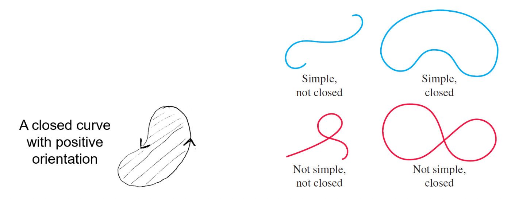

Conservative Fields
Contents
Conservative Fields#
Conservative Fields and Potentials#
If for a vector field \(\overrightarrow{\boldsymbol{F}}(x, y, z)\) there exists a function \(f(x, y, z)\) satisfying \(\overrightarrow{\boldsymbol{F}}=\overrightarrow{\boldsymbol{\nabla}} f\) then \(\overrightarrow{\boldsymbol{F}}\) is called a conservative vector field, and \(f\) is called a potential function for vector field \(\overrightarrow{\boldsymbol{F}}\).
Not all vector fields are conservative, but many important fields in physics are conservative.
For a conservative field, field lines are orthogonal to equipotential surfaces.
The Fundamental Theorem for Line Integrals#
For a smooth curve \(C\) given by \(\overrightarrow{\boldsymbol{r}}(t), a \leq t \leq b\), and a scalar field \(f(x, y, z)\) such that \(\vec{\nabla} f\) exists
and is continuous on \(C\),
Hence for a conservative field \(\overrightarrow{\boldsymbol{F}}=\overrightarrow{\boldsymbol{\nabla}} f\)
the line integral of \(\overrightarrow{\boldsymbol{F}}\) is equal to the net change in the potential function, \(\Delta f\)
the line integral of \(\overrightarrow{\boldsymbol{F}}\) is independent of path
around any closed path, \(\oint_{C} \overrightarrow{\boldsymbol{F}} \cdot d \overrightarrow{\boldsymbol{r}}=0\).
The following converse statements can also be proved to be true (see textbooks):
\(\int_{C} \overrightarrow{\boldsymbol{F}} \cdot d \overrightarrow{\boldsymbol{r}}\) is independent of path if and only if \(\overrightarrow{\boldsymbol{F}}\) is a conservative vector field (that is, if and only if there exists a scalar function \(f\) such that \(\overrightarrow{\boldsymbol{F}}=\overrightarrow{\boldsymbol{\nabla}} f\).)
\(\int_{C} \overrightarrow{\boldsymbol{F}} \cdot d \overrightarrow{\boldsymbol{r}}\) is independent of path in a region \(D\) if and only if \(\oint_{C} \overrightarrow{\boldsymbol{F}} \cdot d \overrightarrow{\boldsymbol{r}}=0\) for every closed path \(C\) in \(D\).
Application
This theorem is the mathematical basis of the principle of conservation of energy. For a conservative force field \(\overrightarrow{\boldsymbol{F}}\), the potential energy, \(E_{p}\), of a body due to the field is defined to be minus the associated potential, \(\overrightarrow{\boldsymbol{F}}=-\overrightarrow{\boldsymbol{\nabla}} E_{p}\). So if we move a body along a path \(C\) from point \(A\) to point \(B\) against the field, the increase in potential energy is equal to the work done against the field and is independent of path: \(\quad-\int_{C} \overrightarrow{\boldsymbol{F}} \cdot d \overrightarrow{\boldsymbol{r}}=\int_{A}^{B} \overrightarrow{\boldsymbol{\nabla}} E_{p} \cdot d \overrightarrow{\boldsymbol{r}}=E_{p}(B)-E_{p}(A)\).
(Component Test) Theorem#
If \(\mathbf{F}=M(x, y) \mathbf{i}+N(x, y) \mathbf{j}\) is a conservative vector field on an open, simply connected” region \(D\), and \(M\) and \(N\) have continuous first order partial derivatives in \(D\), then \(\frac{\partial M}{\partial y}=\frac{\partial N}{\partial x}\) throughout \(D\).
Conversely, if \(P\) and \(Q\) have continuous first order partial derivatives in \(D\) and satisfy \(\frac{\partial M}{\partial y}=\frac{\partial N}{\partial x}\) then \(\mathbf{F}\) is conservative.
open means it does not contain any boundary points
simply connected means it consists of just one piece, without any holes

Note:
Part ii) is what we use to determine whether or not a given vector field is conservative, and is sometimes known as the component test. The equivalent result in \(\boldsymbol{R}^{3}\) is (from Thomas p.994):
Component Test for Conservative Fields#
Let \(\mathbf{F}=M(x, y, z) \mathbf{i}+N(x, y, z) \mathbf{j}+P(x, y, z) \mathbf{k}\) be a field on an open simply connected domain whose component functions have continuous first partial derivatives. Then, \(\mathbf{F}\) is conservative if and only if